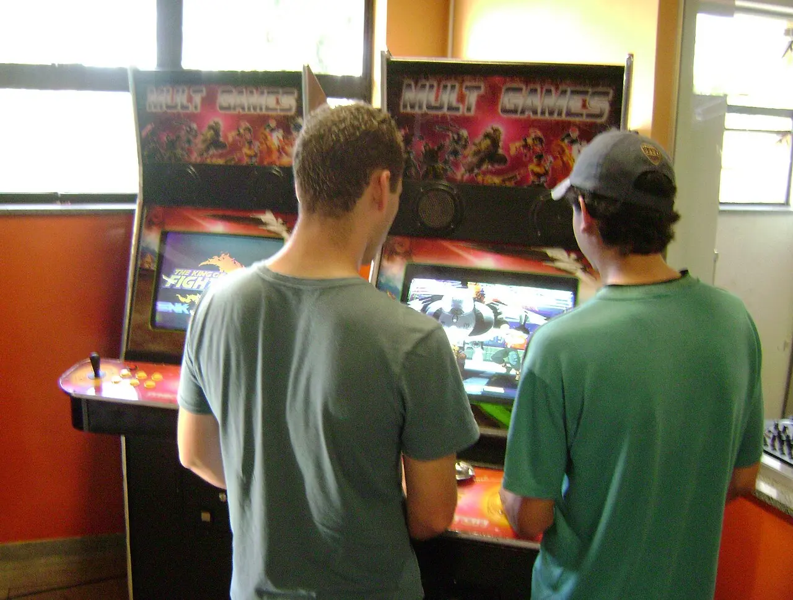
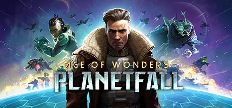
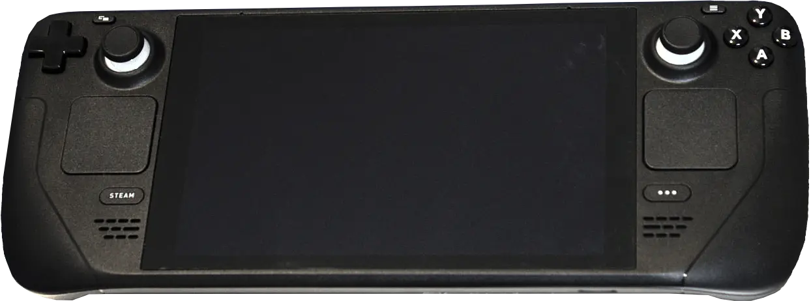
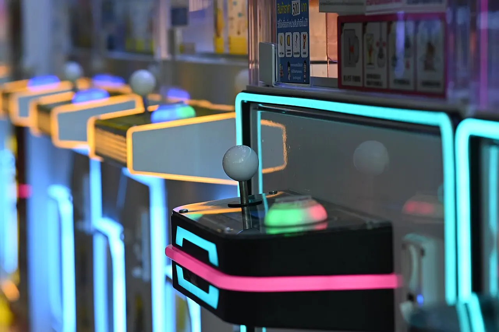
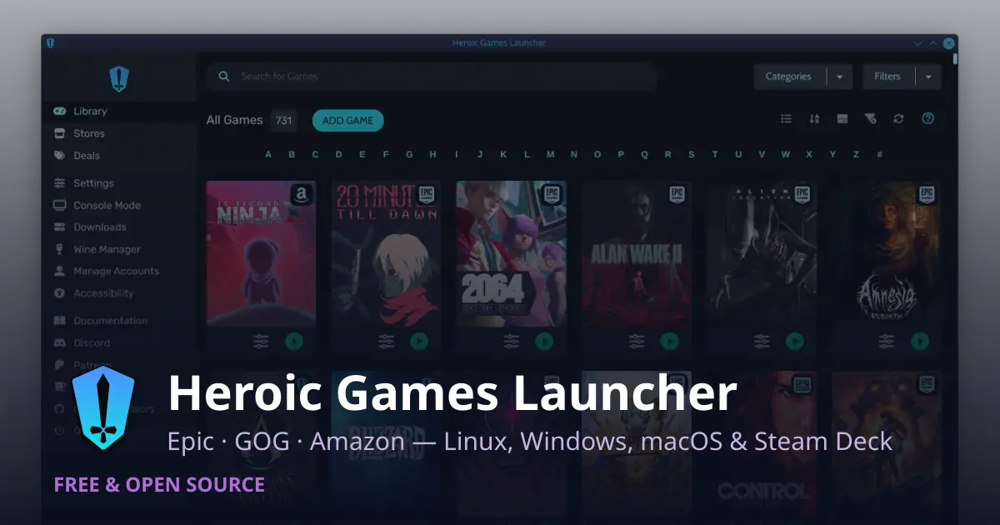
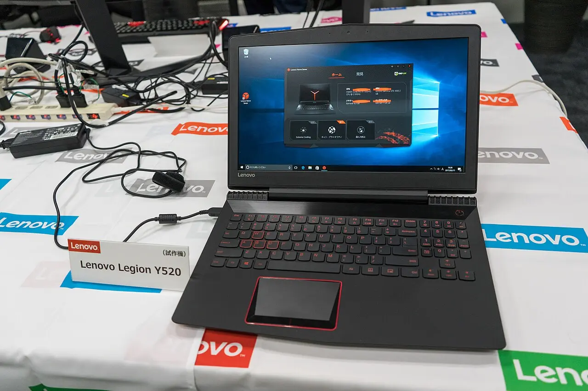
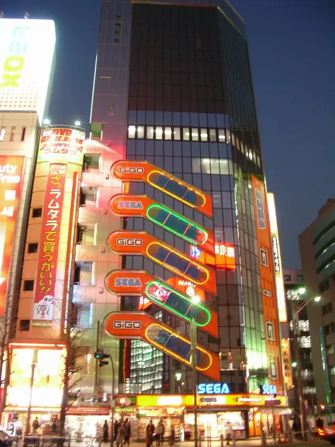

GAMING AFTER
THE SWITCH
YOUR LIBRARY SURVIVES. THE NVIDIA APP DOES NOT.
ALL GAMES CLEARED.
ONE TOOL CABINET DARK.
Every game on this machine runs. Age of Wonders: Planetfall is ProtonDB Gold, trending Platinum across 95 reports [1], and Valve rates it Playable on Deck, SteamOS and Steam Machine [2]. Fall Guys is one of the 146-of-245 anti-cheat titles GamingOnLinux records as Works [3].
The single ✗ is the NVIDIA App — DLSS overrides, driver-level game profiles and ShadowPlay have no GUI on Linux, only environment variables and separate tools [4].
The forward-looking blocker is what you don't own yet: kernel-mode anti-cheat is structurally unrunnable, so any future purchase in that class stays a Windows purchase [3].


Operator's scoreboard
TWO TRACKERS, TWO TOTALS
Both agree on the one title in this library. They disagree about everything else — which is exactly why you check before buying a multiplayer shooter, not after.
Fall Guys (Mediatonic, Easy Anti-Cheat) → WORKS [3]
Fall Guys: Ultimate Knockout → RUNNING. Mediatonic enabled the EAC Linux module in Mar 2022 [11]
Cabinet 05 · high score table
THE INVENTORY, ROW BY ROW
Thirteen entries from the actual installed-software list. CLEARED = a Linux path exists and needs no babysitting. CONTINUE? = it runs, with a known catch. GAME OVER = no equivalent, split the job across other tools.
| RK | PROGRAM | ST | CONTINUE ON LINUX |
|---|---|---|---|
| 01 | Steam2.10.91.91 | CLEARED | Native Linux client + Proton. Proton 11.0-1 stable since 7 Jul 2026, on Wine 11.0 with DXVK 2.7 / VKD3D 1.19 [5]. Nothing to replace. |
| 02 | Age of Wonders: PlanetfallSteam · Paradox | CLEARED | ProtonDB Gold, trending Platinum, 95 reports [1]. Deck / SteamOS / Steam Machine = Playable [2]. |
| 03 | Paradox Launcherv2 | CONTINUE? | Failed to install Paradox Launcher: exit status 1603 has been open since Aug 2019 [6] ⭐ 32k. The Gold rating comes from reports that route around the launcher — cheat code below. |
| 04 | Epic Games Launcher1.3.170.0 | CLEARED | No Linux client exists. Heroic ⭐ 12k covers Epic + GOG + Amazon and manages Wine-GE / Proton-GE itself [8]. |
| 05 | Epic Online Services2.0.33.0 | CONTINUE? | Heroic's EOS Overlay: installed once globally, then enabled per game, and needs DXVK plus the corefonts winetricks package [9]. Friend list and achievements work; the overlay is the fiddly part. |
| 06 | Fall GuysMediatonic · EAC | CLEARED | "Should work out of the box with no need for tweaking. Make sure to use the latest GE-Proton version." [10] Use GE-Proton ⭐ 15k, not stock Proton [12]. |
| 07 | NVIDIA Graphics Driver596.11 | CLEARED | NVIDIA pairs branches — release notes read "Version 595.71.05(Linux)/596.36(Windows)" [13] — so your Windows 596.x maps to Linux 595.x. You are not behind. |
| 08 | NVIDIA App11.0.4.148 | GAME OVER | No GUI equivalent. DLSS / Reflex / Smooth Motion are all environment variables [4]. Full switch map in the options screen below. |
| 09 | NVIDIA FrameView SDK1.5 | CLEARED | MangoHud ⭐ 8.9k — FPS, frame times, temperatures, CPU/GPU load as a Vulkan/OpenGL overlay, logging to CSV for the benchmarking half [15]. |
| 10 | NVIDIA PhysX System Software9.23.1019 | CLEARED | Nothing to install. PhysX is cross-platform and BSD-3 open source since Dec 2018 [16]; games carry their own libraries inside the Proton prefix. |
| 11 | NVIDIA Control PanelNVIDIACorp.NVIDIAControlPanel | CONTINUE? | nvidia-settings ships with the driver [17]. Covers PowerMizer, resolution and sync; no per-game profile database. |
| 12 | Xbox Game Bar+ IdentityProvider + SpeechToTextOverlay | GAME OVER | Game Bar's two real jobs split cleanly: overlay → MangoHud [15], capture / Instant Replay → GPU Screen Recorder [18]. The Xbox PC app and its identity provider have no Linux port; cloud streaming survives because xbox.com supports Edge and Chrome, both of which ship for Linux [19]. |
| 13 | Discord1.0.9250 | CONTINUE? | Screen-share with audio on Wayland has been in Discord stable since Jan 2025, but only for apps that route via PulseAudio, and it was absent from the Flathub build [20]. If a game goes straight to PipeWire, Vesktop ⭐ 8.2k is the fix [21]. Install the .deb/.rpm or Vesktop — not the Flatpak. |
EAC + BATTLEYE — A SWITCH, NOT A WALL
Epic added Easy Anti-Cheat support for Linux, macOS and Steam Deck including Wine and Proton, activated by the developer with a few clicks in the EOS Developer Portal [22].
Concretely: the studio must be on EOS SDK 1.14+ and must activate a Linux client module — "Players running the game using Wine or Proton will use the Linux client module", so it also has to be tested and updated alongside Windows [23]. BattlEye works the same way, opt-in via Valve [24].
→ A "Broken" EAC game is a business decision, not a technical limit.
KERNEL-MODE — A DIFFERENT CATEGORY
A Windows ring-0 driver has no Proton translation target: there is no kernel to load it into, and a user-space shim would defeat the entire threat model.
That is why the vendors that went kernel-only appear as hard failures on GamingOnLinux's July 2026 list — Riot Vanguard and EA Javelin titles both [3]. No Proton version, no GE-Proton build and no launcher flag changes this.
Bonus stage · cabinet 05
THE PARADOX LAUNCHER CHEAT CODE
Keep this in your notes: it is the first thing to try when a Paradox Launcher update or a Proton bump breaks startup — and it is why Planetfall's ProtonDB reports look inconsistent. Half of them bypassed the launcher and half did not [1].
<path to exe> %command% does not work under Proton, because Proton's own wrapper chain is the command line. The working pattern rewrites that string instead [7]:
Substitute Planetfall's own executable name for <GameExe>. Paste it into the Steam launch options field.

Player select · the Epic library
FOUR TOOLS, ONE ANSWER
No Linux Epic client exists, so something has to stand in. Three of these four can do it; only one is the one you actually install.

Heroic Games Launcher
Native Epic support (it wraps Legendary) and bundled Wine-GE / Proton-GE management [8]. It is also the tool whose own wiki documents both of the things you'll hit — the EOS overlay [9] and Fall Guys [10].
Stage hazards · hybrid Legion
THE CABINET YOU'RE ACTUALLY PLAYING ON

Three of these four are decided for you — take the default and stop thinking about it. The fourth is a genuine wall, and it changes how you use the machine, not just how you configure it.
INSTALL 595
595.58.03 became the recommended stable Linux driver on 24 Mar 2026 [17], with R595 adding Vulkan improvements, HDR work and DRI3 v1.2 over 590 [29].
OPEN, BY DEFAULT
From 590, Turing and newer transition automatically to the open kernel modules; Pascal-and-older lost support entirely [14]. Distro packaging followed — Arch's main nvidia packages now build the open modules [28]. Any Legion new enough to carry an Intel Arc iGPU is far past Turing.
USABLE, NOT EXPERIMENTAL
590 raised the minimum Wayland version to 1.20 and fixed Vulkan swapchain re-creation [30]; 595 fixed kwin_wayland failing to wake displays, kernel crashes on DisplayPort MST dock disconnect, and added system-memory fallback to stop low-VRAM desktop freezes [17] — all laptop-and-dock failure modes. KDE Plasma 6.8 re-enables triple buffering by default for NVIDIA [34]; for per-game HDR, VRR and frame limiting, run inside gamescope ⭐ 4.9k [37] rather than fighting the host compositor.
NO ADVANCED OPTIMUS
PRIME render offload keeps the dGPU idle until a game asks: __NV_PRIME_RENDER_OFFLOAD=1 for Vulkan, plus __GLX_VENDOR_LIBRARY_NAME=nvidia for OpenGL/GLX [31] — ahead of %command%. But dynamic MUX switching does not exist: vga-switcheroo cannot express it [33] and NVIDIA's replacement DRM-KMS API is still a proposal [32]. Choose hybrid or dGPU-direct in the BIOS and reboot to change it — and G-Sync on the internal panel generally needs the dGPU-direct path.

The rest of the arcade floor
OTHER CABINETS IN THIS EXPEDITION
Your .NET + SQL Server stack on Linux: what actually replaces what
Rider replaces Visual Studio + ReSharper at the cost of the WinForms/WPF designers; SQL Server moves cleanly to a container, but SSMS has no Linux successor.
Microsoft 365 on Linux in 2026: what you actually lose
Office, Teams and mail are a tolerable compromise; OneDrive sync and OneNote are the two places where the gap is real.
The utility belt: per-tool Linux verdicts for a Windows power user
Most utilities transfer cleanly; AutoHotkey and Power Automate Desktop have no single answer, and Wayland is the variable that decides the rest.
Multi-monitor, window management and the desktop shell
KDE Plasma 6.7 is the only Linux desktop that replaces most of DisplayFusion and FancyZones natively; Fences has no real equivalent.
Legion hardware, peripherals and the two corporate VPNs on Linux
Neither VPN blocks the switch; the real losses are QuantumENGINE, Dolby, XTU and Lenovo's AI/Space bloat.
Escape hatches for the leftovers: Wine, a VM, passthrough, or just keep the partition
Wine for single-window utilities, a local Windows VM for Visual Studio and SSMS, RDP for the corporate cluster — and no GPU passthrough on a muxless Legion.
Credits roll
38 SOURCES
CABINET 05 · GAMING AFTER THE SWITCH · survey · 38 credits · 10 min
Read the full canonical write-up at the default view, or return to the expedition · Atlas
GAME OVER — INSERT COIN